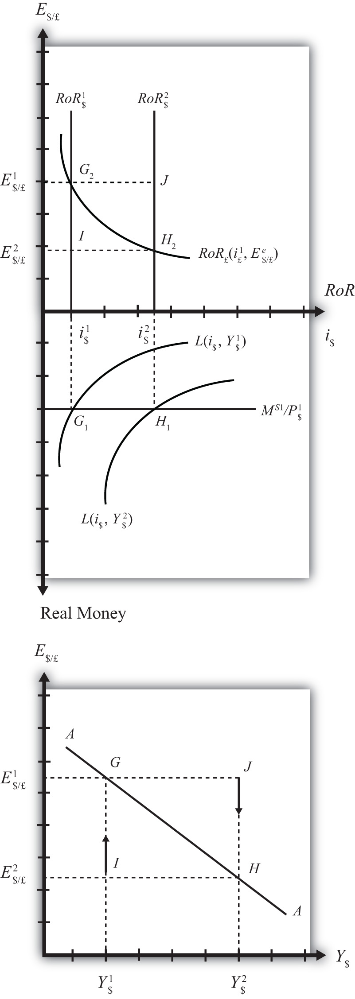

The AA curve is derived by transferring information described in the money market and foreign exchange market models onto a new diagram to show the relationship between the exchange rate and equilibrium GNP. (At this point we will substitute GNP for its virtually equivalent measure, GDP, as a determinant of real money demand.) Since both models describe supply and demand for money, which is an asset, I’ll refer to the two markets together as the asset market. The foreign exchange market, depicted in the top part of Figure 20.4 "Derivation of the AA Curve", plots the rates of return on domestic U.S. assets (RoR$) and foreign British assets (RoR£). (See Chapter 16 "Interest Rate Parity", Section 16.3 "Forex Equilibrium with the Rate of Return Diagram" for a complete description.) The domestic U.S. money market, in the lower quadrant, plots the real U.S. money supply (M$S/P$) and real money demand (L(i$, Y$)). The asset market equilibriums have several exogenous variables that determine the positions of the curves and the outcome of the model. These exogenous variables are the foreign British interest rate (i£) and the expected future exchange rate (E$/£e), which influence the foreign British rate of return (RoR£); the U.S. money supply (M$S) and domestic U.S. price level (P$), which influence real money supply; and U.S. GNP (Y$), which influences real money demand. The endogenous variables in the asset model are the domestic interest rates (i$) and the exchange rate (E$/£). See Table 20.2 "Asset Market (Money + Forex)" for easy reference.
Figure 20.4 Derivation of the AA Curve
Table 20.2 Asset Market (Money + Forex)
| Exogenous Variables | i£, E$/£e, M$S, P$, Y$ |
| Endogenous Variables | i$, E$/£ |
Initially, let’s assume GNP is at a value in the market given by Y$1. We need to remember that all the other exogenous variables that affect the asset market are also at some initial level such as i£1, E$/£e1, M$ S1, and P$1. The real money demand function with GNP level Y$1 intersects with real money supply at point G1 in the money market diagram determining the interest rate i$1. The interest rate in turn determines RoR$1, which intersects with RoR£ at point G2, determining the equilibrium exchange rate E$/£1. These two values are transferred to the lowest diagram at point G, establishing one point on the AA curve (Y$1, E$/£1).
Next, suppose GNP rises, for some unstated reason, from Y$1 to Y$, ceteris paribus. The ceteris paribus assumption means that all exogenous variables in the model remain fixed. Since the increase in GNP raises real money demand, L(i$, Y$), it shifts out to L(i$, Y$2). The equilibrium shifts to point H1, raising the equilibrium interest rate to i$2. The RoR$ line shifts right with the interest rate, determining a new equilibrium in the Forex at point H2 with equilibrium exchange rate E$/£2. These two values are then transferred to the diagram below at point H, establishing a second point on the AA curve (Y$2, E$/£2).
The line drawn through points G and H on the lower diagram in Figure 20.4 "Derivation of the AA Curve" is called the AA curve. The AA curve plots an equilibrium exchange rate for every possible GNP level that may prevail, ceteris paribus. Stated differently, the AA curve is the combination of exchange rates and GNP levels that maintain equilibrium in the asset market, ceteris paribus. We can think of it as the set of aggregate asset equilibriums.
If the economy were at a point off the AA curve, like at I in the lower diagram, the GNP level is at Y$1 and the exchange rate is E$/£2. This corresponds to point I in the upper diagram where RoR£ > RoR$. In the Forex model, when foreign assets have a higher rate of return than domestic assets, investors respond by buying pounds in exchange for dollars in the foreign exchange market. This leads to a depreciation of the dollar and an increase in E$/£. This continues until RoR£ = RoR$ at point G. For all points below the AA curve, RoR£ > RoR$; therefore, the behavior of investors would cause an upward adjustment toward the AA curve from any point like I to a point like G.
Similarly, at a point such as J, above the DD curve, the GNP level is at Y2 and the exchange rate is E$/£1. This corresponds to point J in the upper diagram where RoR$ > RoR£ and the rate of return on dollar assets is greater than the rate of return abroad. In the Forex model, when U.S. assets have a higher rate of return than foreign assets, investors respond by buying dollars in exchange for pounds in the foreign exchange market. This leads to an appreciation of the dollar and a decrease in E$/£. This continues until RoR£= RoR$ at point H. For all points above the AA curve, RoR$ > RoR£; therefore, the behavior of investors would cause a downward adjustment to the AA curve from a point like J to a point like H.
Figure 20.5 A 3-D AA Curve

As with the DD curve, it is useful to think of the AA curve as a river flowing through a valley. (See the 3-D diagram in Figure 20.5 "A 3-D AA Curve".) The hills rise up both above and below. Just as gravity will move a drop of water down the hill to the river valley, in much the same way, investor behavior will move the exchange rate up or down to the lowest point lying on the AA curve.
Jeopardy Questions. As in the popular television game show, you are given an answer to a question and you must respond with the question. For example, if the answer is “a tax on imports,” then the correct question is “What is a tariff?”